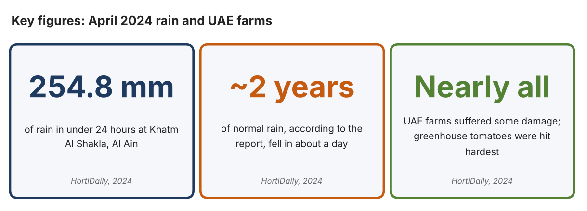
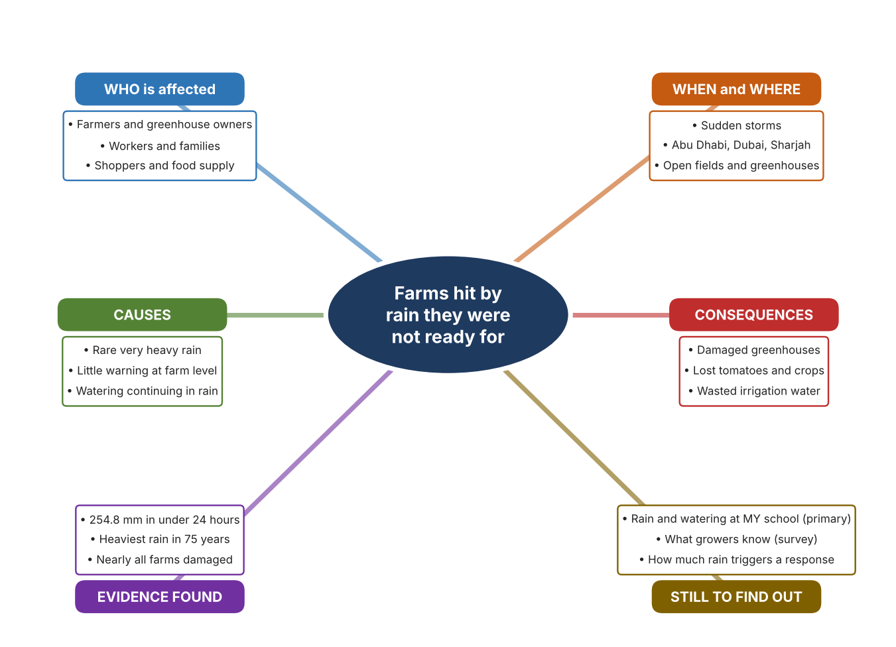
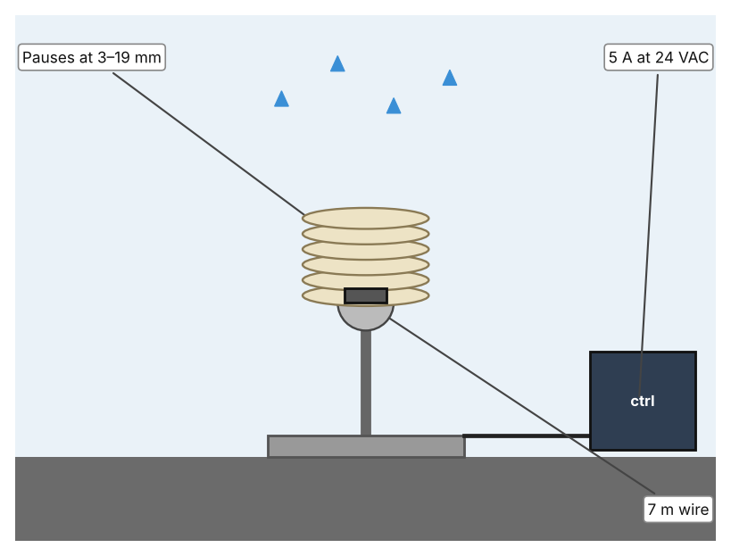
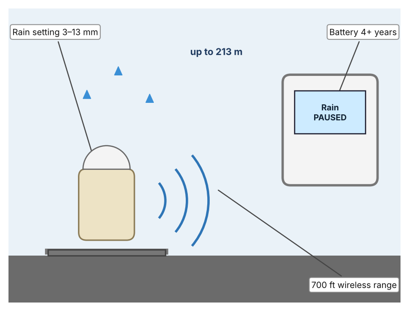
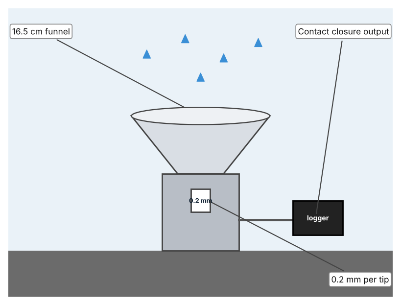

A1 · Design need
Identify and explain the problem faced by your client and community.
My client is the Science Department of a Dubai school, represented by the Head of Science, which runs a growing project and works with a local farm. The department wants its crops and water to be protected when rain arrives. It needs rain to be noticed quickly so that watering can stop and people can prepare.
The people most affected are farmers and greenhouse owners, because heavy rain damages structures and crops. Workers and families who depend on farms are a second group. Students who water the school garden are a third group, because irrigation may keep running while it rains.
The need is real because rare but extreme rain has damaged UAE farms. HortiDaily reported that nearly all farms suffered some damage in April 2024, that greenhouse tomatoes were among the biggest casualties, and that Abu Dhabi, Dubai and Sharjah were hardest hit (Bensaid). Gulf News reported that 254 millimetres of rain fell in under 24 hours at Al Ain, the heaviest rainfall since 1949 (WAM). Neither article gives a total loss figure for farms, and the event was exceptional, so I need to find out about everyday rain at my own school.
Figure 1 summarises the key numbers. They describe one extreme event, so I treat them as a pattern and not as proof about normal weather. In my own words: rain can cause damage when it is extreme and waste when it is ordinary, because watering that continues in the rain is water thrown away. Figure 2 is my mind map of the problem.
257 words


A2 · Research plan
Six research questions of different types, each with a priority, a research type and evidence.
| # | Question | Priority | Primary / secondary | Evidence | Brief answer |
|---|---|---|---|---|---|
| 1 | Factual: How much damage did the April 2024 rain do to UAE farms? | High | Secondary | HortiDaily, 18 Apr. 2024 (Appendix A, Source 1) | Nearly all farms had some damage; greenhouse tomatoes were hit hardest; Abu Dhabi, Dubai and Sharjah most affected; no total loss figure given. |
| 2 | Factual: How much rain fell, and how unusual was it? | High | Secondary | Gulf News, 18 Apr. 2024 (Appendix A, Source 2) | 254 mm in under 24 hours at Khatm Al Shakla, Al Ain; the heaviest rainfall since 1949 (75 years). |
| 3 | Conceptual: How can rain be detected, and how can watering be paused? | Medium | Secondary | Hunter page (Source 3); Rain Bird page (Source 4); Davis page (Source 5) | A rain sensor with a switch interrupts the watering circuit; a wireless version does the same without a cable; a tipping-bucket collector counts rainfall in 0.2 mm steps. |
| 4 | Debatable: Should farms pause watering with a rain sensor, measure rainfall, or focus on protecting structures? | Medium | Secondary | Appendix A, Sources 1, 3, 4 and 5 | A rain sensor saves water in ordinary rain but cannot save a greenhouse in a 254 mm storm; a rain gauge gives data but takes no action. My view: the two problems need different answers. |
| 5 | Debatable (challenges my assumption, UAE source): The UAE is so dry that rain is only good news for farms, so there is nothing to prepare for. | High | Secondary | HortiDaily, 2024 (Source 1); Gulf News, 2024 (Source 2) | Nearly all farms were damaged in April 2024, so rain is a risk as well as a benefit. The event was the heaviest in 75 years, so it may be rare. |
| 6 | Factual (primary): How much rain falls at our school, and does watering continue while it rains? | High | Primary | Own rain records and survey (Appendix A, Sources 6 and 7) | [Student data needed: write rain days, amounts, and whether the garden was watered, with survey averages, then two sentences on the pattern you see.] |
A3 · Existing products
Three significantly different products, each analysed with ACCESS FM, with pros and cons.
Product 1: Wired rain sensor (Hunter Mini-Clik)

Illustration by the author based on the Mini-Clik page, Hunter (Appendix A, Source 3). [Student: replace with a photo from the source, cited MLA 9]
Product 2: Wireless rain/freeze sensor (Rain Bird WR2)

Illustration by the author based on the WR2 page, Rain Bird (Appendix A, Source 4). [Student: replace with a photo from the source, cited MLA 9]
Product 3: Rain collector (Davis 7852)

Illustration by the author based on the Davis 7852 specification (Appendix A, Source 5). [Student: replace with a photo from the source, cited MLA 9]
ACCESS FM analysis
| ACCESS FM | Product 1 | Product 2 | Product 3 |
|---|---|---|---|
| Aesthetics | Small sensor on a wire; look not described. | Small wireless sensor on a post; look not described. | Funnel on a stand; look not described. |
| Cost | Price not shown. | Price not shown. | Price not stated. |
| Customer | Growers with an automatic watering system. | Growers who cannot run a cable. | Growers who want to know how much rain fell. |
| Environment | No battery; powered by the controller circuit. | Battery lasts over four years; 6 kV surge protection. | Not stated. |
| Size | Wire 7 m; size is not stated. | Range 700 ft in line of sight (about 213 m). | 16.5 cm diameter, 24 cm high. |
| Safety | Switch rated 5 A at 24 VAC; UL, cUL, FCC, CE. | Shuts off in about 2 minutes; 24 VAC controllers. | Accuracy ±4% up to 50 mm/h. |
| Function | Pauses watering after preset rain of 3 to 19 mm. | Pauses watering at a preset rain of 3 to 13 mm. | Counts rainfall in 0.2 mm steps. |
| Materials | Materials are not stated. | Materials are not stated. | UV-stabilised ABS plastic with stainless steel screws. |
Pros and cons
| Product 1 | Product 2 | Product 3 | |
|---|---|---|---|
| Pro | Simple and stops watering automatically in rain; 5-year warranty. | No cable and works with many controllers. | Gives a measured amount of rain. |
| Con | Needs a wire to the controller and does not record rainfall. | Radio range depends on a clear line of sight. | Only measures; it does not stop watering by itself. |
A4 · Design brief
Restate the need, summarise the research and the existing products, and state the design intent.
My client, the Science Department of a Dubai school, needs rain to be noticed quickly so that watering can stop and people can prepare. The problem is real: in April 2024 nearly all UAE farms suffered some damage and greenhouse tomatoes were among the biggest casualties (Appendix A, Source 1). 254 millimetres of rain fell in under 24 hours at Al Ain, the heaviest rainfall since 1949 (Appendix A, Source 2).
My research shows that extreme rain can damage farms, and that no loss figure was published (Appendix A, Sources 1 and 2). It was one rare event, so I need my own evidence about normal rain and about how often watering continues while it is raining. My debatable questions led me to decide that pausing watering, measuring rain and protecting structures answer different parts of the problem, and my challenged assumption (that rain is only good news for UAE farms) showed me that rain is also a risk. I will gather my own evidence with rain records and a survey, always with permission (Appendix A, Sources 6 and 7).
I analysed three very different existing solutions. A wired rain sensor pauses watering once 3 to 19 millimetres have fallen, but it needs a wire to the controller (Appendix A, Source 3). A wireless sensor does the same with a range of 700 feet, but it depends on a clear line of sight (Appendix A, Source 4). A rain collector counts rainfall in 0.2 millimetre steps, but it does not act on the result (Appendix A, Source 5). They give me three ideas for inspiration: stopping watering with a switch, sending the signal by radio, and counting the rain. Each has a weakness that another covers.
My design intent is therefore to create a solution that detects rain and tells people or equipment quickly, so that watering can stop and people can prepare. It must be affordable, waterproof, durable in sun, and reliable. I have deliberately not fixed what form it will take. That decision will be made in Criterion B, after I analyse my own rain records and survey against the evidence in Appendix A.
356 words
Appendix A · Research notes and sources
Secondary sources in MLA 9, with notes and where each source is used.
| # | Source (MLA 9) | Key notes | Used in |
|---|---|---|---|
| 1 | Bensaid, Youness. “Unprecedented Floods in the United Arab Emirates Destroy Greenhouses.” HortiDaily, 18 Apr. 2024, www.hortidaily.com/article/9618838/unprecedented-floods-in-the-united-arab-emirates-destroy-greenhouses/. Accessed 21 Oct. 2026. | Nearly all farms some damage; greenhouse tomatoes biggest casualties; Abu Dhabi, Dubai, Sharjah hardest hit; 254.8 mm in under 24 hours at Khatm Al Shakla; no total loss figure. | A1; A2 Q1, Q4 and Q5; A4. |
| 2 | WAM. “UAE Witnesses Largest Amount of Rainfall in 75 Years.” Gulf News, 18 Apr. 2024, gulfnews.com/uae/weather/uae-witnesses-largest-amount-of-rainfall-in-75-years-1.1713319645595. Accessed 21 Oct. 2026. | 254 mm in under 24 hours at Khatm Al Shakla, Al Ain; heaviest rainfall since 1949. | A1; A2 Q2 and Q5; A4. |
| 3 | “Mini-Clik Rain Sensor.” Hunter Industries, www.hunterirrigation.com/en-metric/irrigation-product/sensors/mini-cliktm-sensor. Accessed 21 Oct. 2026. | Adjustable 3–19 mm; 7 m two-conductor wire (some listings 7.5 m); 5 A at 24 VAC; 5-year warranty; UL, cUL, FCC, CE and RCM; price not listed. | A2 Q3 and Q4; A3 Product 1; A4. |
| 4 | “WR2 & WR2-48 Series Wireless Rain/Freeze Sensors.” Rain Bird, rainbird.com/products/wr2-wr2-48-series-wireless-rainfreeze-sensors/. Accessed 21 Oct. 2026. | Rain setting 3–13 mm; shut-off in about 2 minutes; 700 ft line-of-sight; battery over 4 years; 6 kV surge protection; 24 VAC controllers; 868 MHz international; price not shown. | A2 Q3 and Q4; A3 Product 2; A4. |
| 5 | “Rain Collector 7852 Specifications.” Davis Instruments, cdn.shopify.com/s/files/1/0115/9192/files/7852_spec_Rev_E.pdf. Accessed 21 Oct. 2026. | 0.2 mm per tip; ±4% to 50 mm/h, ±5% to 100 mm/h; collector 16.5 cm; 16.5 cm diameter by 24 cm high; UV-stabilised ABS; reed-switch contact closure; price not stated. | A2 Q3 and Q4; A3 Product 3; A4. |
| 6 | Primary: rain and watering records, completed by the student on [date]. Accessed own data. | [Student: summarise your counts.] | A2 primary question; A4. |
| 7 | Primary: survey of [number] people, completed on [date]. | [Student: summarise your averages.] | A2 primary question; A4. |
Primary research instrument 1: rain and watering records
Student records rain days and watering only from school records or observation, with the teacher present, and never works outdoors during a storm.
| Date | Rain? (Y/N) | Amount if known (mm) | Garden watered that day (Y/N) | Weather note | Notes |
|---|---|---|---|---|---|
| Day 1 | |||||
| Day 2 | |||||
| Day 3 | |||||
| Day 4 |
Primary research instrument 2: survey
Rate each statement from 1 (strongly disagree) to 5 (strongly agree). Collect responses with permission and record no names.
| Statement | 1 | 2 | 3 | 4 | 5 | Total responses |
|---|---|---|---|---|---|---|
| I know when it has rained at our school. | ||||||
| Our garden is sometimes watered while it is raining. | ||||||
| I know how to prepare a garden for very heavy rain. | ||||||
| I would trust an automatic rain alert. |